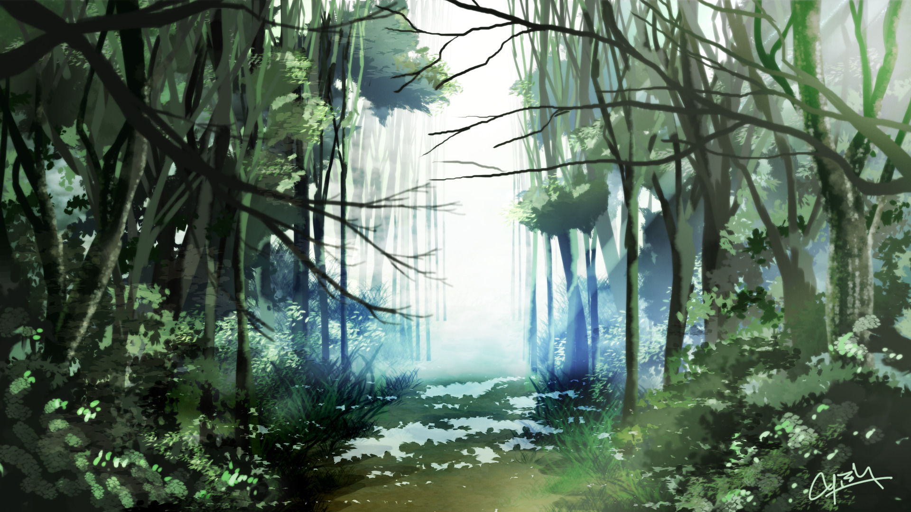

Miljöö

Heimonne asuu viidakossa järven rannalle rakennetussa kaislamajakylässä. Kaikki viidakon puut ja pensaat tuottavat syötäviä ja maukkaita hedelmiä. Paitsi omenat. Kaikki tietävät niiden olevan kirottuja ja tekevän hulluksi. Järvessä on paljon kaloja ja äyriäisiä joita syömällä tuntee itsensä vahvemmaksi. Kalastaminen kuitenkin on vaarallista, koska pinnan alla vaanii armottomia merenneitoja. Viidakossa vilisee paljon pieniä eläimiä, niiden metsästäminen ei ole kannattavaa koska ne eivät maistu kovin hyviltä ja ovat sitkeitä.
Syvemällä viidakossa on luolia joihin pitää viedä ruoka-uhrauksia lepyttämään esi-isien henkiä. Suuttuessaan henget herättävät luolien syvyyksistä kävelevän kiiltävän luurangon joka tulee ryöstämään kylästä pikkulapsen. Mitä syvemälle luolaan uhrauksen vie sitä parempi, mutta varoen koska voi helposti eksyä. Luolista voi myös löytyä hyödyllisiä lahjoja.
Tiivis kaveriryhmänne on koko lapsuutenne yhdessä varttuneita nuoruksia. Nyt teille on koittanut aika jättää lapsuus taakse. Tämä on yhden kuunkierron koe, jossa teidän pitää aina päiväksi poistua kylältä viidakkoon. Kylänvanhin kertoi kuinka teidän pitää käyttää tämä aika ympäristön ja itsenne tutkimiseen, ja hauskanpitoon. Tämän jälkeen on sitten aika ottaa kylän tehtäviin aikuisena.
Kolmantena aamuna suunnatessane pois kylältä, ryhmänne vilkkain astuu vahingossa punaisen omenan päälle ja pyyhkäisee sotkun pois kädellään. Kaikki huudahtavat säikähdyksestä ja pelosta. Tuleeko pahoja seurauksia jo pelkästä kielletyn hedelmän koskemisesta? Hetken hiljaisuuden jälkeen kun mitään ei tapahdu, hän hymyilee ja tokaisee "olen aina miettinyt mille omenat maistuvat, kenenkään ei tarvitse tietää jos maistamme vain yhden nuolaisun..."
Yleistietoa
- Tiedät kyllä vanhempasi, mutta kaikki aikuiset kasvattavat lapsia melko yhteisöllisesti. Joten synnyinvanhempasi eivät ole kovinkaan merkityksellisiä.
- Henkishamaani osaa tulkita luolista löytyvien alttarien henkitarpeita ja tietää mitä uhrauksia koska on tehtävä. Jos tämän tekee väärin tai puutteellisesti henget suuttuvat.
- Vain aikuiset saavat taisteilla luurankoja vastaan keihäillä joihin on kiilattu kivi.
- Viidakon hedelmistä ja kasveista saatte helposti kaiken tarvitsemanne ruuan ja juoman. Kukaan ei kerää mitään ruokaa varastoon.
- Viidako jatkuu ainakin usean päivämatkan verran joka suuntaan, paitsi poispäin järveltä, jossa vastaan tulee kallioseinämä parin tunnin kävelyn jälkeen. Kukaan ei ole kulkenut järven ympäri, koska puolivälissä eteen tulee vastaan hankala ja vaarallinen kosteikkoalue jossa merenneidot helposti yllättävät.
Merenneidot
- Merenneitoja näkyy harvoin, mutta voivat vaania heti pinnan alla. Ne ovat vaarallisia. Ne hukuttavat ja raatelevat kaikki jotka saavat kiinni. Muistatte lapsuudesta tapauksen jossa epäonnekkaasta kalastajasta ei jäänyt paljon haudattavaa.
- Vanhemmat kyläläiset osaavat kertoa, etteivät neidot ole paljoa ihmisiä kookkaampia, lähinnä pyrstöevän verran pitempiä. Yksi liioittelusta tunnettu vanha kalastaja väittää kerran nähneensä hyvin pitkän, melkein käärmemäisen yksilön. Itse olette nähneet vain vilaukselta kauempana järvellä hetkeksi pinnan yläpuolelle tulleita päitä.
Seikkailukohteet
- Juomavesipuro Kylän vieressä järveen tulee puro jonka alkupäässä on huhujen mukaan kaunis vesiputous jossa on kuulma turvallista kylpeä.
- Kalliotemppeli Poispäin järveltä reilun tunnin kävelymatkan päässä on lähin kallioseinämä, josta alkaa iso luola joka johtaa yhdelle temppeleistä, mutta myös pelottavan hämäriin sivukäytäviin joissa ette ole käyneet.
- Simpukkaranta Parin niemenkärjen takana on kirkasvesinen ja pitkämatala hiekkaranta. Rantavedestä voi kerätä simpukankuoria ja löytää hyvämnakuisia kotiloita. Ne vaan täytyy ensin jättää pari tuntia mustan kiven päälle kypsymään.
- Viidakkoaukea Korkeimpaan puuhun kiipeämällä yksi teistä on näyhnyt suunnan jossa keskellä viidakkoa ei näy puunlatvoja.
- Suurviidakko Nousevan auringon suunnassa teräväsilmäisten mukaan kaukana näkyy tavallista korkeammista ja isommista puista koostuva viidakko.